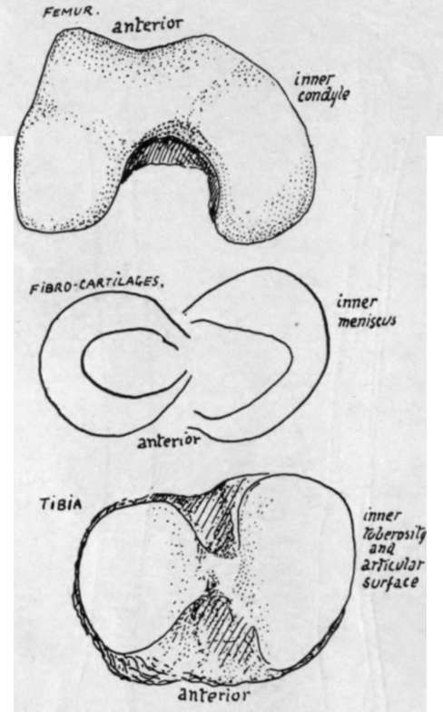

Fibula. Part 2
Description
This section is from the book "The Anatomy Of The Human Skeleton", by J. Ernest Frazer. Also available from Amazon: The anatomy of the human skeleton.
Fibula. Part 2
The outer cartilage more nearly completes a circle,' so that its ends, or cornua, are closer together than those of the inner meniscus, thus placing the order of their attachment to the tibia as in Fig. 131. The two cornua of the outer cartilage are on the front and back of the outer tubercle of the spine, the anterior cornu of the inner cartilage is in front by the edge of the inner articular surface, while its posterior cornu is behind the spine also against the edge of the inner surface. The anterior crucial ligament is attached to the tibia behind the anterior cornu of the internal cartilage, but the posterior crucial ligament is on the extreme back part of the intervening non-articular area in the popliteal notch, being really placed on the posterior surface of the bone more than on its upper aspect.
Fig. 130.-Parts of a right knee to show the correspondence between them. The inner condyle of the femur is longer, as are also the inner cartilage and tibial surface; the outer structures are shorter and rounder in shape. The inner condyle exhibits a curve, possibly related to the small amount - of movement it has on the tibia rotating round the femoral attachment of the anterior crucial ligament : no definite corresponding curve is seen on the tibia, but the contiguous margins of the tibial surfaces show a comparable difference.
When these structures are in position the arrangement of ligaments and cartilages on the top of the tibia is as seen in the figure.
The fibro-cartilages are peripheral rings, deficient centrally, wedge-shaped on section with the base of the wedge applied to the capsular structures : their projection into the cavity divides it into suprachondral and infrachondral parts widely continuous with each other round the thin edge of the wedge. The deeper fibres of the capsule fasten each cartilage (coronary hgaments) to the tibia and femur, but, as those passing to the latter are long and movable and those to the former very short, the menisci move with the tibia * on the femur, gliding forward with it in extension and thus coming to occupy by their front borders the depressions already noticed on the femoral condyles (Fig. 123). .
It is evident that different parts of the menisci come under special pressure during the various ranges of movement of the joint, and that there must, in consequence, be small alterations in shape of these cartilages wedged in between the moving bony surfaces. Attention may be called in particular to the pressure on the external plate exercised by the lower part of the trochlear surface of the femur when the knee is fully extended : the front and inner margin of the cartilage, which already overlaps the edge of the tibial articular surface to some extent, is pressed further over this on to the non-articular part, and a marking may be found on the bone which indicates where this expansion takes place.
The strength of the knee joint during use depends on the breadth and practically horizontal level of the opposed femoral and tibial surfaces : when standing, for example, the femur rests directly on the tibia and is not supported by the tension of any ligament -save, perhaps, that of the Ligamentum patellae, which is, however, tightened to keep the femur upright and not for the purpose of holding it on the tibia.
But there must be ligamentous bands whose function is to prevent slipping of the bones on one another and also to keep them in proper apposition during movement and to limit this movement. These bands are the two lateral ligaments/the patellar „ ligament or tendon, and the crucial ligaments.' The last are mostly concerned in limiting movement and the others in holding the bones in apposition : the capsule fills up the intervals between the lateral ligaments and patellar tendon, and also covers in the posterior aspect of the condylar recesses of the joint.
The crucial ligaments are attached, as shown in Fig. 131, to the top of the tibia between the articular surfaces : the anterior one passes upwards, backwards, and outwards, to the inner aspect of the outer femoral condyle, the posterior one upwards, forwards, and inwards, to the outer aspect of the inner condyle. The area of attachment to the condyles is shown in Fig. 122.
The sides of the ligaments are covered by the synovial reflections off the condyles between which they lie, and a diverticulum of the trochlear cavity is continued back between them as a sort of bursa (Fig. 122).
The anterior crucial ligament is evidently made tight by extension of the knee (Fig. 127), so that it prevents over-extension,* also when it is tight there is only possible a very slight rotation outwards of the tibia on the attachment of the ligament, helped by the shape of the articular surface of the femur, so that the presence of this band is probably primarily responsible for the terminal "locking" rotation of complete extension.
* This is. of course, to be expected, since the cornua are attached to the tibia.
The posterior crucial is made tense by movement backwards of the tibia, but it is doubtful if it limits flexion : probably it holds the bones together, while the smaller curve of the back part of the condyles enables flexion to take place without increasing its tension.
The back of the condylar cavities is covered in, between the crucial region and the lateral ligaments, by vertical capsular fibres which afford extensive origin to Gastrocnemius and Plantaris (Fig. 120). The same figure shows how the upward expansion (ligam. posticum) from Semimembranosus covers in the crucial ligaments behind, passing to the inter-condylar ridge and to the outer condylar capsule. All these fibres when tense will limit extension.
The Ligamentum patellae is really the tendon of the Quadriceps, and extends from the patella to the tibial tubercle : it therefore comes down to a much lower level than the synovial membrane which passes directly from the patella to the top of the tibia. Thus between this level and the tubercle the tendon lies in front of the triangular area here on the tibia, and it is separated from this by the infrapatellar pad of fat and bursa.
The tendon has the aponeurotic expansions of the Vasti inserted into it and surrounding it, so that it and the patella are held more firmly by this means in their central position, and possibly on account of this the tendon may be considered to have some value as a means of securing the bones during movement of the joint : otherwise it is difficult to imagine that it could exercise any restraining influence on lateral movements or indeed on antero-posterior movements of an abnormal sort.
Continue to:
- prev: Fibula
- Table of Contents
- next: Fibula. Part 3